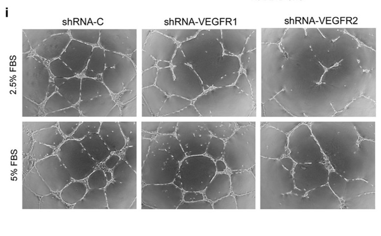
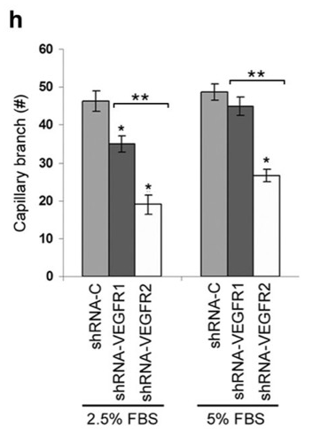
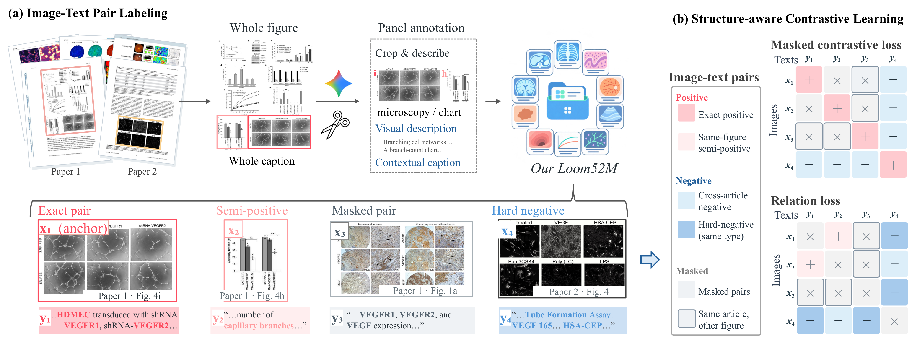
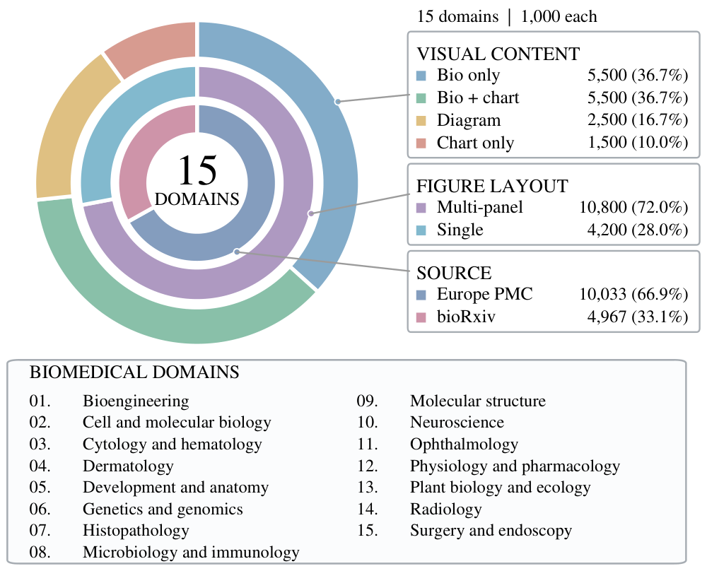

Ground truth
BioLoom: Scaling Biomedical Vision-Language Models by Learning from the Structure of Scientific Articles
1 Australian National University (ANU) · 2 Stanford University
3 The University of Sydney · 4 The Ohio State University · 5 Canva
Find the figure
Query
Demo gallery1,000 figures
Rank 1
Loading the retrieval demo…
ZERO-SHOT CLASSIFICATION
Biomedical image recognition
Select a domain and test case to replay predictions from BioLoom and five baselines.
ZERO-SHOT OUTPUTS
Correct Error
Paper abstract
The development of biomedical vision-language models (VLMs) with contrastive image-text pretraining has been driven by scaling to increasingly large and diverse image-text datasets. Beyond scaling, further progress can come from learning richer representations from existing data. We hypothesize that the structure of scientific literature itself provides an additional source of supervision: figures, panels, captions, and accompanying article text encode rich relationships across modalities. Yet, treating these as independent image-text pairs overlooks their relationships. To address this limitation, we incorporate these structural relationships into contrastive image-text supervision. We preserve exact image-text matches while introducing weaker positive supervision for related pairs, such as a panel and the caption of a sibling panel. We upweight cross-article negatives of the same content type to encourage finer discrimination. We also enrich panel descriptions using visual content, original figure captions, and mentioning paragraphs. Pairing panels with these descriptions and whole figures with their original captions yields Loom52M, a dataset of 52.4 million image-text pairs spanning scientific charts and biomedical images. Using Loom52M, BioLoom (DFN-2B) achieves 56.82% domain-balanced mean accuracy across 67 zero-shot classification tasks from 43 datasets in 10 domains, compared with 48.77% for MedPMC-CLIP. On BioLoomBench with concise captions and BioMedFlickr, it achieves bidirectional mean Recall@1 of 63.20% and 10.59%, versus 46.37% and 7.55% for the respective strongest evaluated baselines, BiomedCLIP and MedPMC-CLIP.
From figure to panel pairs
The micrograph matches its own caption. The sibling chart provides a weaker positive by adding complementary evidence about the same experiment.
Whole figures
Exact match for panel i
Representative 40× micrographs show endothelial tube formation after 24 hours on growth-factor-reduced Matrigel.

Sibling caption
Reports capillary branch counts for each experimental group, adding a quantitative measure of the tube formation shown in panel i.

Learning across relations
BioLoom aligns exact image–text pairs and learns from sibling captions as weaker positives.
It masks cross-figure pairs from the same article and upweights same-content-type negatives from different articles in the relation loss.
Method overview

Enrich panel captions
Describe each panel using its visual content, the original figure caption, and the article text that mentions it.
Learn from sibling panels
Give exact image–text pairs full alignment weight and sibling panel captions weaker positive weight.
Mask related pairs
The main loss excludes sibling panel pairs and same-article cross-figure pairs from its negative set. Upweight same-content-type negatives from different articles.
Structure-aware contrastive loss
Both terms average image-to-text and text-to-image losses. The relation loss averages over anchors with at least one semi-positive candidate.
Exact-pair alignment
The denominator uses exact and cross-article pairs. It masks semi-positive and same-article cross-figure pairs.
Semi-positive alignment
Semi-positive pairs supply the positive signal. The denominator upweights cross-article negatives of the same content type.
- Exact matches for anchor i.
- Non-exact pairs from the same figure.
- Pairs from different figures in the same article.
- Pairs from different articles.
- Similarity between normalized image and text embeddings. j indexes a candidate and τ is the temperature.
- Scales the relation loss in the total objective.
- Uses α to upweight same-content-type cross-article negatives. Other included pairs retain their original contribution.
Our Datasets & Benchmark
Loom52M
52.4 million
Whole-figure and panel image–text pairs for training, built from scientific articles in BIOMEDICA.
Browse Loom52MBioLoomBench
15,000
Retrieval figures from 15 biomedical domains, each paired with concise and original captions.
Browse BioLoomBench
Results
BioLoom (DFN-2B) and MedPMC-CLIP under the evaluation protocols used in the paper.
BioLoom (DFN-2B)MedPMC-CLIP
Zero-shot classification
Domain-balanced accuracy · 67 tasks
BioLoomBench
Mean bidirectional R@1 · concise captions
BioMedFlickr
Mean bidirectional R@1 · same-caption relevance
* denotes random vision-encoder initialization for image-text pretraining.
Zero-shot classification
Accuracy (%) over 67 tasks from 43 sources. Overall averages tasks within each source, then sources within each domain, and weights the ten domains equally.
| Model | Params. | Cell | Struct. | Micro. | Cytology | Histo. | Radiol. | Ophth. | Derm. | Surgery | Microb. | Overall |
|---|---|---|---|---|---|---|---|---|---|---|---|---|
| Random | - | 18.65 | 17.78 | 34.42 | 13.77 | 28.96 | 38.18 | 29.67 | 13.23 | 19.63 | 29.23 | 24.35 |
| CoCa* | 430M | 22.18 | 33.45 | 56.86 | 41.56 | 39.80 | 36.31 | 50.53 | 17.37 | 23.05 | 31.48 | 35.26 |
| OpenCLIP* | 428M | 24.49 | 44.44 | 59.04 | 10.25 | 41.03 | 64.86 | 42.80 | 15.67 | 31.26 | 44.87 | 37.87 |
| PMC-CLIP* | 137M | 28.16 | 48.95 | 69.20 | 15.16 | 57.30 | 53.91 | 38.74 | 16.34 | 29.09 | 38.16 | 39.50 |
| MedSigLIP | 800M | 22.74 | 44.77 | 65.31 | 37.28 | 38.77 | 49.26 | 49.24 | 20.62 | 19.38 | 58.58 | 40.59 |
| BiomedCLIP | 196M | 24.11 | 49.59 | 74.55 | 11.16 | 53.02 | 55.36 | 38.27 | 30.48 | 41.83 | 43.63 | 42.20 |
| Panel2Patch | 428M | 29.40 | 47.12 | 75.66 | 9.50 | 52.30 | 63.31 | 47.56 | 43.76 | 37.34 | 27.77 | 43.37 |
| BMC-CLIP-CF | 428M | 24.79 | 56.53 | 69.39 | 8.97 | 51.34 | 60.85 | 46.38 | 43.76 | 41.35 | 32.25 | 43.56 |
| BMC-LongCLIP | 454M | 25.62 | 51.49 | 76.23 | 35.61 | 53.94 | 60.73 | 35.53 | 40.87 | 37.38 | 28.62 | 44.60 |
| MedPMC-CLIP | 428M | 28.60 | 57.60 | 66.17 | 38.18 | 59.49 | 55.57 | 51.40 | 45.49 | 35.11 | 50.11 | 48.77 |
| ◆ BioLoom (Scratch)* | 454M | 34.22 | 56.69 | 79.70 | 37.96 | 61.81 | 64.57 | 56.65 | 38.75 | 52.65 | 45.90 | 52.89 |
| ◆ BioLoom (DFN-2B) | 454M | 31.05 | 59.73 | 76.32 | 45.61 | 62.55 | 61.40 | 61.64 | 48.21 | 57.62 | 64.09 | 56.82 |
BioLoomBench retrieval
Recall@1, 10 and 100 (%) for concise and original captions. I2T is image to text and T2I is text to image.
| Model | Concise caption | Original caption | ||||||||||
|---|---|---|---|---|---|---|---|---|---|---|---|---|
| I2T | T2I | I2T | T2I | |||||||||
| R@1 | R@10 | R@100 | R@1 | R@10 | R@100 | R@1 | R@10 | R@100 | R@1 | R@10 | R@100 | |
| CoCa* | 24.25 | 46.37 | 74.44 | 22.35 | 42.85 | 71.15 | 18.37 | 36.88 | 64.68 | 18.53 | 36.72 | 62.48 |
| OpenCLIP* | 27.65 | 50.47 | 76.93 | 25.69 | 47.82 | 75.24 | 25.34 | 47.37 | 73.49 | 24.68 | 45.66 | 71.75 |
| PMC-CLIP* | 4.75 | 14.76 | 33.11 | 4.84 | 15.87 | 35.96 | 4.47 | 13.69 | 30.34 | 6.05 | 18.04 | 37.51 |
| MedSigLIP | 27.39 | 56.07 | 82.69 | 16.38 | 38.63 | 67.55 | 19.88 | 44.66 | 72.75 | 9.43 | 26.52 | 53.27 |
| MedPMC-CLIP | 41.27 | 70.51 | 89.33 | 36.84 | 63.63 | 84.71 | 55.42 | 80.70 | 93.03 | 56.14 | 81.63 | 93.35 |
| Panel2Patch | 42.43 | 71.55 | 92.02 | 36.96 | 64.62 | 87.45 | 47.75 | 74.83 | 91.61 | 49.57 | 77.01 | 92.84 |
| BMC-LongCLIP | 44.39 | 78.15 | 95.83 | 35.47 | 68.14 | 90.77 | 67.35 | 87.45 | 95.83 | 67.17 | 87.65 | 95.90 |
| BMC-CLIP-CF | 47.11 | 76.90 | 94.85 | 38.74 | 66.15 | 88.41 | 52.09 | 78.96 | 92.94 | 51.89 | 78.97 | 93.25 |
| BiomedCLIP | 51.65 | 84.38 | 97.67 | 41.09 | 75.63 | 94.71 | 69.80 | 89.67 | 97.11 | 69.11 | 89.48 | 96.97 |
| ◆ BioLoom (Scratch)* | 61.93 | 90.61 | 98.79 | 52.33 | 83.86 | 97.44 | 75.91 | 92.94 | 98.09 | 74.22 | 91.52 | 97.43 |
| ◆ BioLoom (DFN-2B) | 66.81 | 92.81 | 99.28 | 59.59 | 88.81 | 98.77 | 79.29 | 94.57 | 98.39 | 78.34 | 94.10 | 98.41 |
BioMedFlickr retrieval
Recall at 1, 10, and 100 (%). The original exact-pair protocol counts only the paired row as relevant. Our protocol counts any row with the same caption text as relevant in both retrieval directions.
| Model | Image to text | Text to image | ||||
|---|---|---|---|---|---|---|
| R@1 | R@10 | R@100 | R@1 | R@10 | R@100 | |
| CoCa* | 1.64 | 5.58 | 15.30 | 2.06 | 7.95 | 23.98 |
| OpenCLIP* | 2.41 | 8.48 | 23.42 | 3.13 | 11.36 | 34.25 |
| PMC-CLIP* | 2.03 | 8.38 | 25.61 | 2.67 | 11.75 | 34.38 |
| MedSigLIP | 3.56 | 10.83 | 31.45 | 4.62 | 15.18 | 38.78 |
| BiomedCLIP | 4.76 | 14.04 | 35.46 | 4.68 | 19.05 | 50.45 |
| Panel2Patch | 3.60 | 12.40 | 33.00 | 7.00 | 19.82 | 46.93 |
| BMC-LongCLIP | 5.00 | 15.57 | 37.52 | 6.67 | 20.97 | 52.32 |
| BMC-CLIP-CF | 4.86 | 14.18 | 35.81 | 6.99 | 22.95 | 50.47 |
| MedPMC-CLIP | 5.94 | 19.94 | 45.26 | 9.16 | 31.61 | 61.38 |
| ◆ BioLoom (Scratch)* | 8.00 | 21.85 | 45.66 | 8.84 | 27.63 | 58.75 |
| ◆ BioLoom (DFN-2B) | 9.73 | 25.58 | 49.46 | 11.45 | 31.90 | 63.51 |
Scaling and transfer
BibTeX
@misc{yang2026bioloom,
title = {BioLoom: Scaling Biomedical Vision-Language Models by Learning from the Structure of Scientific Articles},
author = {Yang, Yuwei and Sun, Xiaoxiao and Lozano, Alejandro and Ting, Yuan-Sen and Yuan, Yuhui and Zheng, Liang and Yeung-Levy, Serena},
year = {2026},
eprint = {2611.33151},
archivePrefix = {arXiv},
url = {https://arxiv.org/abs/2611.33151}
}